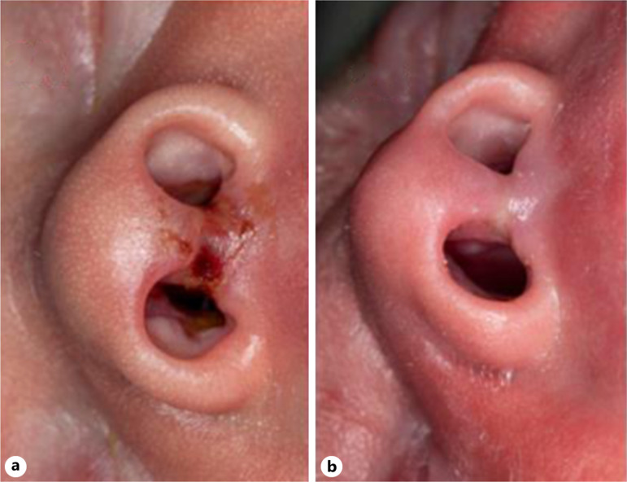
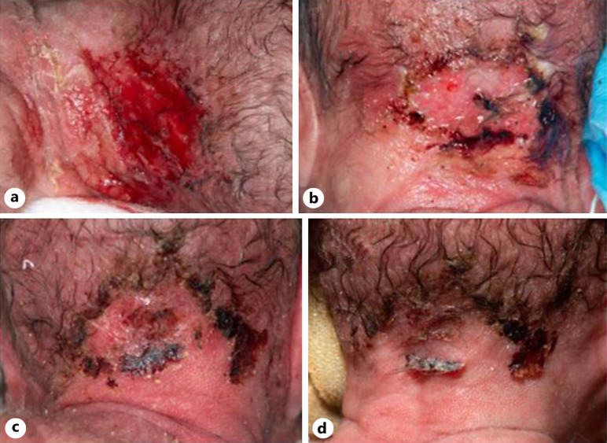
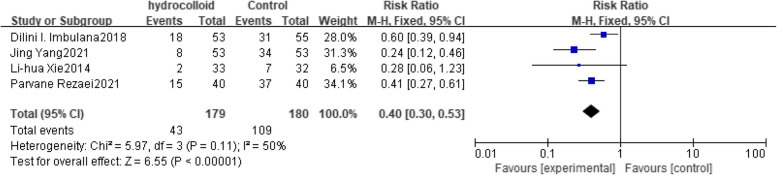

6167 — Loét do áp lực do thiết bị ở trẻ sơ sinh: mask CPAP, ống nội khí quản, điện cực / Medical device-related pressure injury in neonates
Tags: pattern:loet-ap-luc vung:da vung:so-sinh score:NPIAP score:NSCS protocol:cham-soc-da protocol:CPAP
Mức chắc chắn (certainty): tổng hợp y văn (literature synthesis) — loạt ca có ảnh lâm sàng (Case Rep Dermatol 2026: 3 ca sinh non 23+5, 28+6, 27 tuần) + 1 tổng quan hệ thống/phân tích gộp 12 RCT (BMC Pediatr 2025, n = 1.271) + 1 nghiên cứu hồi cứu người lớn dùng làm đối chứng (Health Sci Rep 2025). Không có ca nguyên văn riêng của nhóm.
1. Tổng quan — vì sao da trẻ sinh non "không chịu nổi" một chiếc mask; TẠI SAO tổn thương hay ở đúng chỗ tì đè
- Da trẻ sinh non mỏng hơn hẳn: tổng độ dày da 0,9 mm ở trẻ sinh non, 1,2 mm ở trẻ đủ tháng, so với 2,1 mm ở người lớn; độ dày tỷ lệ nghịch với tuổi thai. Lớp sừng chỉ có vài lớp và protein trung bì ít → hàng rào kém, dễ tổn thương bởi áp lực, lực cắt (shear), ma sát, bóc tách do băng dính (MARSI).
- Áp lực = lực / diện tích (P = F/A): đầu prong CPAP tì vào cột trụ mũi (columella) – vách mũi – cánh mũi trên một diện tích rất nhỏ, nên cùng một lực siết của dây đai tạo ra áp lực tại chỗ lớn hơn nhiều so với một mặt tiếp xúc rộng (mask). Khi áp lực tại chỗ vượt áp lực đóng mao mạch (kinh điển ~32 mmHg) trong vài giờ → thiếu máu cục bộ → ban đỏ không mất khi ấn → loét.
- Ba lực cùng lúc: (1) áp lực trực tiếp của interface; (2) lực cắt/ma sát khi trẻ cử động, khi thay mask; (3) ẩm ướt do hơi thở/humidifier + băng dính → maceration, làm da yếu thêm. Vì vậy tổn thương thường đúng hình dạng thiết bị (mask, prong, dây đai, điện cực, vòng tay).
- Tần suất rất cao: y văn ghi nhận tổn thương mũi do thông khí không xâm nhập ở trẻ sinh non có thể tới 90%; các thể gồm chảy máu mũi, loét niêm mạc, biến dạng cánh mũi, tổn thương vách mũi, hẹp tiền đình mũi, rách da.
- Hậu quả không chỉ là "vết đỏ": hoại tử sụn/niêm mạc → biến dạng mũi vĩnh viễn, sẹo, hẹp lỗ mũi, có ca phải tạo hình; kéo dài thời gian nằm viện, tăng chi phí và sang chấn cho gia đình.
- Đối chứng ở người lớn (để thấy trẻ khác thế nào): ở người lớn thở NIV, tổn thương áp lực do thiết bị gặp 15,4% (12/78), chủ yếu số 1 (83,3%) và số 2 (16,7%), hay ở sống mũi – trán – tai; yếu tố nguy cơ độc lập là albumin thấp và thời gian thở máy không xâm nhập dài. Trẻ sinh non có da mỏng hơn 1/3 – 1/2 người lớn nên cùng thời gian phơi nhiễm cho tổn thương sâu hơn.

Trẻ 28+6 tuần, 1.220 g, thở CPAP mũi từ lúc sinh: a) ngày thứ 9 — trợt/đóng vảy và hoại tử nông ngay cột trụ mũi và vành lỗ mũi (đúng vị trí prong tì); b) ngày 17 — da liền sau khi thay bằng gel tạo màng. Nguồn: Fleming R, Strunk T, Case Rep Dermatol 2026 (PMC12975154) Fig. 2, CC BY-NC 4.0.2. Mẫu hình + gamut theo vị trí thiết bị (location-based)
2a. Theo thiết bị → vị trí tổn thương điển hình
| Thiết bị | Vị trí hay tổn thương | Hình thái |
|---|---|---|
| CPAP mũi (prong) | Cột trụ mũi, vách mũi, vành lỗ mũi, cánh mũi | Trợt/loét hình vành khuyên, đóng vảy, hoại tử đen; hẹp tiền đình mũi về sau |
| CPAP mask / mũ CPAP | Sống mũi, gò má, trán (dây đai mũ), sau tai | Ban đỏ hình mask, trợt, đôi khi hoại tử da trán |
| Ống nội khí quản + dây cố định | Khóe miệng, môi trên, cột trụ mũi (nếu cố định bằng dây qua mũi) | Rách da, loét ấn, MARSI do băng dính |
| Điện cực theo dõi / vòng tay nhận diện | Ngực, bụng, cổ tay, mắt cá | Ban đỏ/trợt hình tròn hoặc hình vòng |
| Đầu dò SpO₂, nhiệt độ | Ngón tay/chân, nách | Ban đỏ, phỏng nếu quá nhiệt |
| Catheter rốn (băng cố định) | Quanh rốn | Kích ứng hóa chất (chlorhexidine) + bóc tách |
2b. Gamut "đỏ/trợt vùng mũi–miệng ở trẻ sơ sinh" — không phải cứ đỏ là loét áp lực
- Loét áp lực do thiết bị (MDRPI): đúng vị trí tì đè, hình dạng khớp thiết bị, xuất hiện sau nhiều giờ–ngày thở CPAP.
- MARSI (tổn thương da do băng dính): bề mặt bóng/trợt nông, hình dải băng, xảy ra ngay khi gỡ băng.
- Kích ứng/bỏng hóa chất: chlorhexidine, cồn, dung dịch sát khuẩn — hình chảy tràn, bờ không đều, có khi ở bụng/quanh rốn.
- Nhiễm trùng da: HSV sơ sinh (chùm mụn nước), impetigo (vảy vàng mật ong), viêm mô tế bào (đỏ lan, ấm, sốt) — cần cấy/kháng sinh, không phải "chăm sóc loét".
- Tụ máu vách mũi / áp-xe vách mũi sau sinh khó (forceps): khối căng, tím, tắc mũi — cần dẫn lưu, khác hẳn loét nông.
- Biến thể sắc tố: dát xanh tím vùng cùng cụt/lưng (dermal melanocytosis), không đau, không đổi theo thiết bị — đừng gọi là loét.
- U máu (hemangioma): đỏ tươi, gồ lên, lớn dần, không khớp vị trí thiết bị.
2c. Phân độ NPIAP (áp dụng cho MDRPI, kể cả trẻ sơ sinh)
- Độ 1: ban đỏ không mất khi ấn, da còn nguyên; ở da sẫm màu có thể chỉ thấy đổi màu/tím/nóng–lạnh bất thường.
- Độ 2: mất một phần bề dày da (trung bì) — trợt nông, bóng hoặc khô, không có mô hoại tử/mỡ; có thể có bọng nước.
- Độ 3: mất toàn bộ bề dày da — thấy mỡ dưới da, có thể có hốc/mô hoại tử ẩm; chưa tới gân/cơ/xương.
- Độ 4: mất toàn bộ bề dày + lộ gân/cơ/xương/sụn — ở mũi trẻ sơ sinh nghĩa là mất sụn cánh mũi/vách mũi, để lại biến dạng.
- Tổn thương áp lực mô sâu (DTPI): vùng tím/mận đậm hoặc bọng máu, da có thể còn nguyên → tổn thương sâu hơn vẻ ngoài.
- Loét niêm mạc: không phân độ theo NPIAP; ghi vị trí + kích thước (vách mũi, niêm mạc môi).
- Nguyên tắc vàng: phân độ theo tổn thương sâu nhất, và MDRPI luôn mang hình dạng thiết bị — đây là chốt phân biệt với loét do tì đè thông thường.

Cùng loạt ca: a) ngày 13 — vùng trợt lớn ở trán dưới dây/mũ CPAP, đáy đỏ; b) ngày 15 — mô hoại tử đen, tiết dịch; c) ngày 18 và d) ngày 21 — sau khi chuyển sang gel tạo màng, tổn thương thu nhỏ và liền. Nguồn: Fleming R, Strunk T, Case Rep Dermatol 2026 (PMC12975154) Fig. 3, CC BY-NC 4.0.3. Bảng so sánh phân biệt (ma trận đối chiếu)
| Thực thể (entity) | Hình ảnh/đặc điểm điển hình | Chốt vào (rule-in) | Chốt loại (rule-out) | Gợi ý xác nhận |
|---|---|---|---|---|
| MDRPI độ 1 | Ban đỏ không mất khi ấn, da nguyên, đúng hình thiết bị | Vị trí khớp interface + không mất khi ấn | Đỏ mất khi ấn, không khớp thiết bị → ban đỏ tạm thời | Ảnh chuẩn hóa + đánh giá lại sau 2–4 giờ sau khi bỏ thiết bị |
| MDRPI độ 2 | Trợt nông, bóng/khô, không mỡ/không hoại tử | Mất một phần bề dày + đúng vị trí tì | Đáy sâu thấy mỡ → độ 3; có mụn nước lan → nghĩ HSV | Soi da, nếu nghi nhiễm: PCR HSV/cấy |
| MDRPI độ 3–4 | Mất toàn bộ bề dày; độ 4 lộ sụn/gân/xương | Thấy mỡ (độ 3) hoặc sụn mũi (độ 4) | Chỉ trợt nông → độ 2 | ENT/tạo hình đánh giá sụn; chụp CT/MRI chỉ khi nghi viêm sụn/áp-xe |
| MARSI | Trợt bóng hình dải băng, ngay sau gỡ băng | Bờ khớp băng dính + xuất hiện tức thì | Hình vành khuyên đúng prong, xuất hiện sau nhiều giờ → MDRPI | Hỏi lại quy trình dán/gỡ băng |
| Bỏng/kích ứng hóa chất | Đỏ/trợt lan theo dòng chảy, bờ không đều | Tiền sử dung dịch sát khuẩn + hình chảy tràn | Hình khớp thiết bị → MDRPI | Xem lại loại dung dịch, pha loãng |
| Nhiễm trùng da (HSV/impetigo/cellulitis) | Mụn nước chùm, vảy vàng, hoặc đỏ lan + sốt | Tổn thương lan ngoài vùng tì + sốt/CRP tăng | Khu trú đúng interface, không lan → MDRPI | PCR HSV, cấy da, CRP |
| Tụ máu/áp-xe vách mũi | Khối căng, tím, tắc mũi, đau | Khối căng + tắc mũi một bên | Trợt nông + không có khối → MDRPI | ENT + siêu âm/CT nếu cần dẫn lưu |
| Dermal melanocytosis | Dát xanh tím, phẳng, vùng cùng cụt/lưng | Không đau, không đổi theo thiết bị, từ lúc sinh | Đỏ/tím đúng vị trí mask, mới xuất hiện → MDRPI | Theo dõi, không can thiệp |
4. Protocol phòng ngừa + phân độ + sơ đồ xử trí
4a. Bó phòng ngừa (bundle) — bằng chứng định lượng
- Chọn interface theo kích cỡ: prong không được làm trắng (blanch) niêm mạc/vành mũi; mask phải phủ kín nhưng không tì vào sống mũi; đánh giá lại mỗi lần thay.
- Giảm lực siết dây đai: dây đủ chặt để giữ seal, không siết thêm; tránh kéo mask lên cao tì vào sống mũi.
- Hydrocolloid dự phòng: phân tích gộp 12 RCT (n = 1.271) cho thấy dùng hydrocolloid dự phòng giảm tổn thương mũi rõ rệt — OR 0,40 (KTC 95% 0,30–0,53, p < 0,0001).
- Mask vs prong: mask mũi ít tổn thương hơn prong — OR 0,62 (0,45–0,87, p = 0,006); luân phiên mask/prong không khác biệt — OR 0,95 (0,27–3,29, p = 0,093), tức "đổi qua đổi lại" không thay thế được việc chọn đúng cỡ + đệm bảo vệ.
- Giảm ẩm ướt: humidifier đúng mức, lau khô vùng da dưới mask mỗi lần thay, tránh băng dính kín hơi.
- Đánh giá da có hệ thống: mỗi ca trực theo thang NSCS (Neonatal Skin Condition Score, 3–9: 3 = tốt nhất, 9 = nặng nhất) dựa trên khô da – ban đỏ – trợt da; chụp ảnh chuẩn hóa khi có tổn thương (có đồng thuận của cha mẹ).
- Luân chuyển vị trí interface theo quy trình đơn vị (thường mỗi 3–4 giờ) — chưa có ngưỡng thời gian thống nhất trong y văn, nên ghi rõ quy trình của khoa thay vì trích "chuẩn".
- Yếu tố nền cần tối ưu: albumin/dinh dưỡng (ở người lớn albumin thấp là yếu tố nguy cơ độc lập), kiểm soát phù, giảm thời gian thở NIV khi có thể.
4b. Đo – ghi – theo dõi
- Đo: dài × rộng (mm), vị trí theo giải phẫu (cột trụ mũi/vách/cánh mũi), độ NPIAP, mô đáy (hồng/trắng/đen), dịch tiết, đau.
- Chụp ảnh: cùng khoảng cách, cùng ánh sáng, có thước/tăm bông làm mốc; ảnh trước–sau để so sánh (như loạt ca ở trên).
- Hình ảnh CT/MRI: không thường quy; chỉ khi nghi viêm sụn, áp-xe vách mũi, viêm mô tế bào sâu hoặc biến dạng mũi cần đánh giá trước tạo hình.
4c. Sơ đồ xử trí
flowchart TD
A[Tre sinh non dang thong khi khong xam nhap] --> B[Danh gia da moi ca truc: vi tri, mau, NSCS]
B --> C{Co ton thuong dung hinh thiet bi?}
C -->|Khong| D[Tiep tuc du phong: dung co, hydrocolloid, giam am]
C -->|Co| E[Phan do NPIAP: 1 - 2 - 3 - 4 - DTPI - niem mac]
E --> F{Do 1 hoac DTPI?}
F -->|Co| G[Bo/giam ti de, hydrocolloid, danh gia lai sau 2-4 gio]
F -->|Khong| H{Do 2 tro len?}
H -->|Do 2| I[Che phu khong dinh: gel tao mang/bang silicone, tranh bang dinh]
H -->|Do 3-4 hoac lo sun| J[ENT + tao hinh: danh gia sun, chong nhiem, ke hoach tao hinh]
I --> K[Danh gia lai moi 24 gio + anh]
G --> K
J --> K
K --> L{Tien trien xau hoac nhiem?}
L -->|Co| M[Cay/PCR, khang sinh, danh gia lai thiet bi va ky thuat]
L -->|Khong| N[Tiep tuc bundle, ghi ho so]
4d. Ngưỡng chuyển tuyến
- Độ 3–4, lộ sụn, hoại tử đen không tự bong: hội chẩn ENT/tạo hình sớm (tránh cắt lọc quá tay gây mất sụn thêm).
- Nghi nhiễm: cấy/PCR, kháng sinh theo khoa; không bôi corticoid lên vùng nghi nhiễm.
- Biến dạng mũi/hẹp tiền đình mũi: theo dõi đến khi trẻ lớn, chụp CT đánh giá trước tạo hình khi có chỉ định.
5. Biến thể bình thường và cạm bẫy
- Ban đỏ mất khi ấn (sau khi vừa bỏ mask 30–60 phút) là phản ứng tạm thời, không phải độ 1 — nhưng phải đánh giá lại, không bỏ qua.
- Da sẫm màu: độ 1 có thể không thấy đỏ mà chỉ tím/nóng/lạnh/đau; đừng kết luận "da bình thường" chỉ vì không đỏ.
- Vảy/đóng mày vàng ở cột trụ mũi dễ bị coi là "lành" nhưng thường là tổn thương sâu đang khô — cần làm ẩm, không bóc vảy.
- "Đổi mask/prong luân phiên" không đủ: phân tích gộp cho thấy không giảm tổn thương (OR 0,95); tin vào luân phiên mà bỏ qua cỡ prong là bẫy thường gặp.
- Hydrocolloid trên da đã trợt/tiết dịch nhiều: có thể gây maceration và nhiễm; khi da đã mất toàn bộ bề dày, dùng gel tạo màng/băng silicone không dính thay vì hydrocolloid kín.
- Băng dính "cho chắc": chính là nguyên nhân MARSI và che mất tổn thương bên dưới — hạn chế tối đa.
- Nhầm với nhiễm HSV sơ sinh: mụn nước chùm, lan ngoài vùng tì, trẻ có thể sốt/lừ đừ → PCR HSV, không chờ loét tiến triển.
- Chỉ nhìn mặt trước mũi: tổn thương vách mũi/niêm mạc chỉ thấy khi soi đèn và nhìn từ dưới lên; bỏ sót dẫn tới dính vách, hẹp tiền đình mũi về sau.
- Ảnh hồ sơ không chuẩn hóa: ảnh thiếu mốc kích thước/ánh sáng khiến không so sánh được tiến triển — chụp lại cùng góc.
6. Tự lượng giá — Blind Quiz
Ca 1 — trẻ 28+6 tuần, CPAP mũi từ lúc sinh, ngày thứ 9
- Bối cảnh: sinh non 28+6 tuần, 1.220 g, thở CPAP mũi từ sinh; ngày 9 thấy vết đỏ–trợt ở mũi, trẻ quấy khi thay prong.
- Câu hỏi: (1) Tổn thương nằm ở đâu và hình dạng khớp với thiết bị nào? (2) Phân độ NPIAP? (3) Hai việc cần làm ngay và một việc không nên làm?
Bấm để hiện đáp án (findings + chẩn đoán)
- Dấu hiệu: trợt + vảy/hoại tử nông ở cột trụ mũi và vành lỗ mũi, hình vành khuyên khớp đầu prong; ảnh b là sau 5 ngày điều trị bằng gel tạo màng — da liền.
- Chẩn đoán: loét áp lực do thiết bị (MDRPI) độ 2 — mất một phần bề dày, chưa thấy mỡ/sụn.
- Việc cần làm: đổi cỡ/loại interface + đệm bảo vệ, chăm sóc ẩm bằng gel tạo màng; không dán băng dính kín/bóc vảy.
- Nguồn ảnh: Fleming R, Strunk T, Case Rep Dermatol 2026 (PMC12975154) Fig. 2, CC BY-NC 4.0.
Ca 2 — trẻ 27 tuần, tổn thương ở trán dưới mũ CPAP
- Bối cảnh: trẻ 27 tuần, CPAP qua mũ; ngày 13 thấy vùng da trán đỏ rồi đen lại, tiết dịch.
- Câu hỏi: (1) Vì sao tổn thương ở trán mà không ở mũi? (2) Mô đen là mô gì và có nên cắt bỏ ngay? (3) Theo dõi bằng gì để biết đang lành?
Bấm để hiện đáp án
- Dấu hiệu: vùng trợt lớn dưới dây/mũ CPAP, đáy đỏ → mô hoại tử đen (eschar); các ảnh sau cho thấy tổn thương thu nhỏ, liền dần.
- Chẩn đoán: MDRPI độ 3 tại trán (hoại tử da, có thể tới mỡ) do dây/mũ CPAP — minh họa rằng MDRPI không chỉ ở mũi.
- Nguyên tắc: không cắt lọc hoại tử khô chưa phân định ranh giới ở trẻ non tháng; chăm sóc ẩm, kiểm soát nhiễm, đánh giá lại mỗi 24 giờ; theo dõi bằng ảnh chuẩn hóa + đo mm + NSCS.
- Nguồn ảnh: Fleming R, Strunk T, Case Rep Dermatol 2026 (PMC12975154) Fig. 3, CC BY-NC 4.0.
Ca 3 — chọn biện pháp dự phòng: số liệu nói gì?

- Bối cảnh: khoa sơ sinh muốn giảm tổn thương mũi do CPAP; đề xuất "luân phiên mask–prong mỗi 4 giờ" hoặc "dán hydrocolloid dự phòng".
- Câu hỏi: (1) Biện pháp nào có bằng chứng mạnh hơn? (2) Đọc OR và KTC 95% của hydrocolloid; (3) Vì sao "luân phiên" không được coi là biện pháp chính?
Bấm để hiện đáp án
- Dấu hiệu: forest plot gộp các RCT về hydrocolloid dự phòng — hiệu ứng nghiêng về giảm tổn thương, KTC không chạm 1.
- Chẩn đoán/khuyến nghị: hydrocolloid dự phòng: OR 0,40 (0,30–0,53), p < 0,0001; mask so với prong: OR 0,62 (0,45–0,87), p = 0,006; luân phiên mask–prong: OR 0,95 (0,27–3,29), p = 0,093 — không có ý nghĩa.
- Kết luận: ưu tiên chọn đúng cỡ interface + đệm hydrocolloid; luân phiên chỉ là thói quen, không thay thế hai việc trên.
- Nguồn ảnh: Gong T et al., BMC Pediatr 2025 (PMC12107769) Fig. 7, CC BY-NC-ND 4.0 (nguyên hình, không chỉnh sửa).
Phản biện nguồn: phân tích gộp chỉ gồm 12 RCT, n = 1.271, nhiều nghiên cứu cỡ mẫu nhỏ và khác nhau về định nghĩa "tổn thương mũi"; ngưỡng "luân chuyển mỗi 3–4 giờ" là quy trình đơn vị, chưa có thử nghiệm xác lập.
Bài liên quan chéo
- 6149 – Loét do áp lực quanh lỗ mở khí quản ở trẻ (MDRPI vùng cổ)
- 6109 – Thông khí không xâm nhập tại nhà quanh mổ ở trẻ
- 6100 – Chăm sóc và cai ống mở khí quản ở trẻ
Ảnh
images/6167_loet-ap-luc-thiet-bi-so-sinh_Anh_PMC12975154-F2.jpg— tổn thương cột trụ mũi do CPAP (Fleming R, Strunk T, Case Rep Dermatol 2026, CC BY-NC 4.0).images/6167_loet-ap-luc-thiet-bi-so-sinh_Anh_PMC12975154-F3.jpg— tổn thương trán do mũ CPAP (cùng bài, CC BY-NC 4.0).images/6167_loet-ap-luc-thiet-bi-so-sinh_Forest_PMC12107769-F7.jpg— forest plot hydrocolloid (Gong T et al., BMC Pediatr 2025, CC BY-NC-ND 4.0, nguyên hình).- Chi tiết giấy phép:
images/CREDITS.md; link gốc:sources.md.
Không dùng để chẩn đoán độc lập khi chưa có người hướng dẫn.